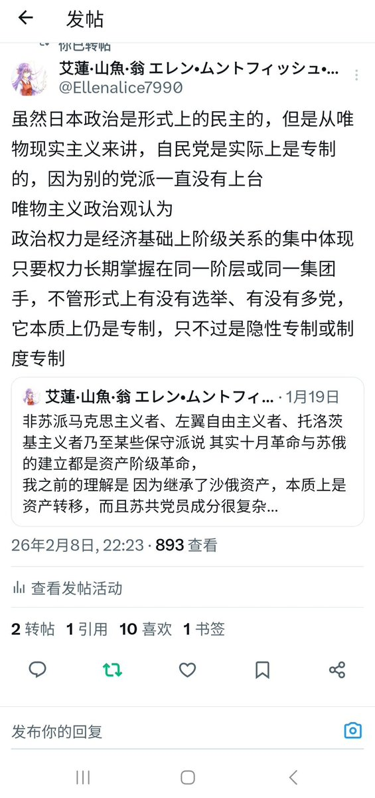
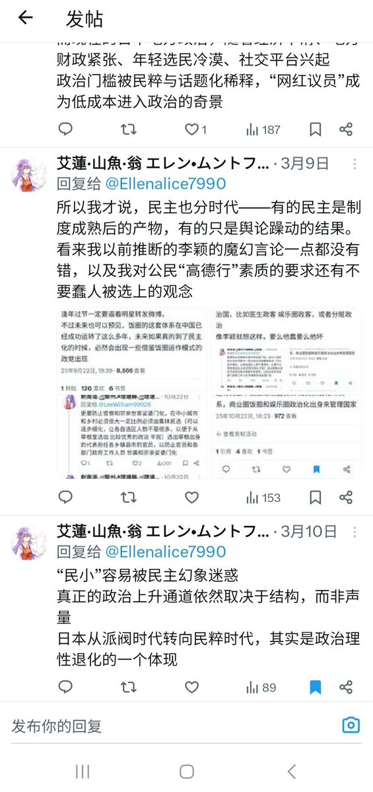
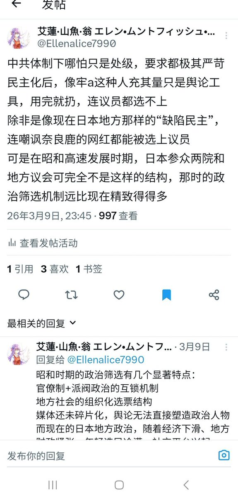
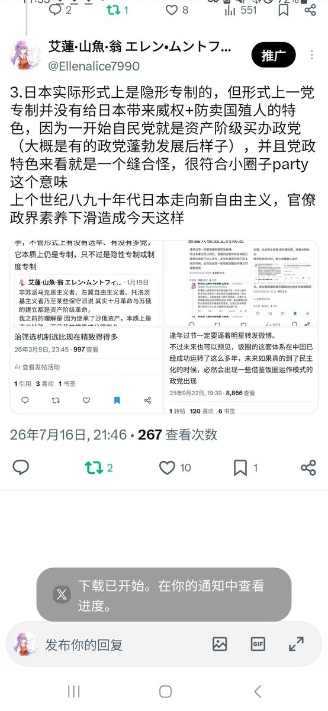

大狐帝国史官邹智萱（笔名段歌文）
@Rococo90933671
@Ellenalice7990 俄罗斯也很像，都是一党优势制：名义上多党制，实际上一党长期执政




艾蓮·山魚·翁 エレン・ムントフィッシュ・オン
@Ellenalice7990
这样的结果印证日本自民党就是民主中的专制的
虽然日本政治是形式上的民主的，但是从唯物历史来讲，自民党是实际上是专制的，因为别的党派一直没有上台
但形式上一党专制并没有给日本带来威权+防卖国殖人的特色，因为一开始自民党就是资产阶级买办政党
唯物主义政治观认为 https://t.co/TJBj6JwUpG https://t.co/JRpjuyfLf9